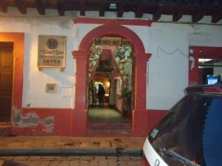
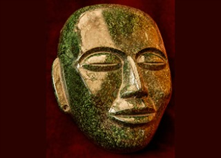
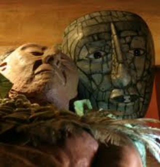
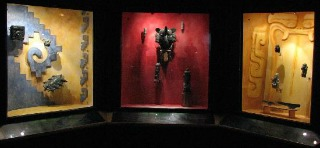
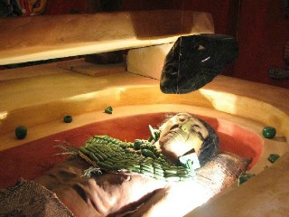

El museo del jade es un recinto dedicado a exaltar la belleza y la historia, a través del arte tallado en la piedra conocida como Jade, allí se pueden admirar objetos y joyas relacionados con ocho de las principales culturas del área Mesoamericana; Mocaya, Olmeca, Teotihuacana, Mixteca, Zapoteca, Maya, Tolteca y Azteca. Una de las partes culminantes de la visita de este museo es la admiración de la réplica del Mausoleo de Kinich Janab Pakal, el onceavo Gobernante Maya de la antigua ciudad que hoy conocemos como Palenque, en el cual el cuerpo del personaje luce con todas sus joyas de jade.
El jade es una mística piedra preciosa que para los pueblos antiguos de Mesoamérica, era símbolo de inmortalidad, eternidad, poder, amor.
Se encuentra ubicado en la Avenida Crescencio Rosas a media cuadra de la Plaza de la Paz.
Si usted se encuentra ubicado en la plaza de la paz viendo de frente hacia la catedral puede caminar dirigiendose hacia el banco banorte que se encuentra a la izquierda de la plaza de la paz, después de haber pasado por banorte al llegar la esquina de vuelta la derecha camine unos cuantos pasos y frente a usted encontrará el museo.
En el lugar usted puede realizar actividades como:
* Fotografía
* Visita a Museos





posicione el mouse sobre las imágenes